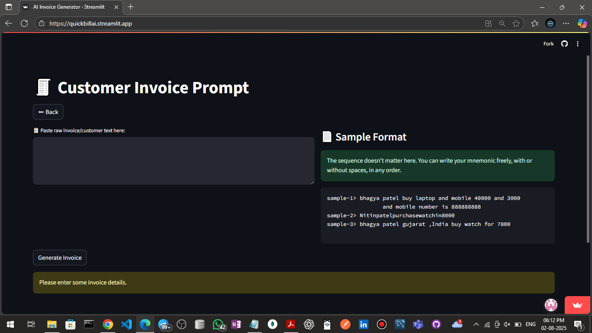
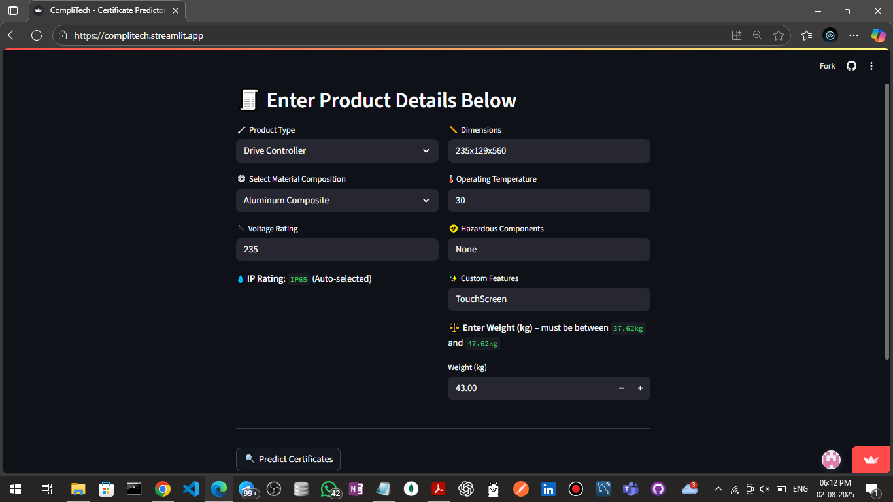
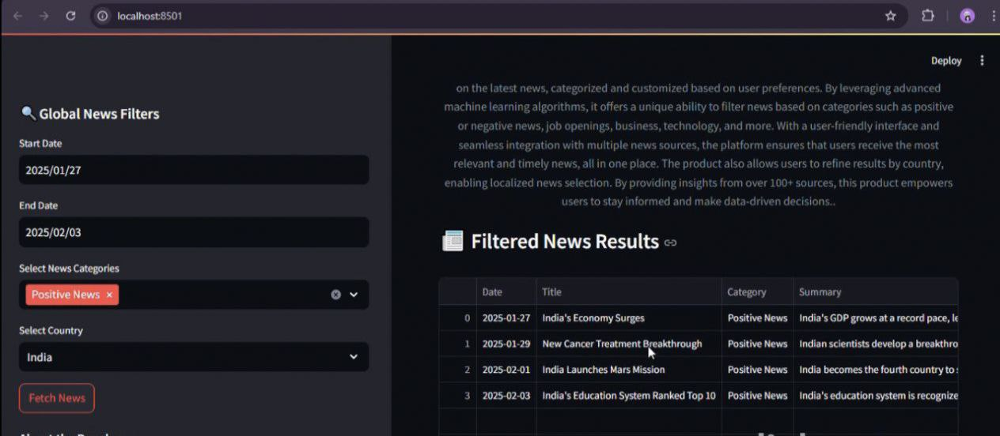
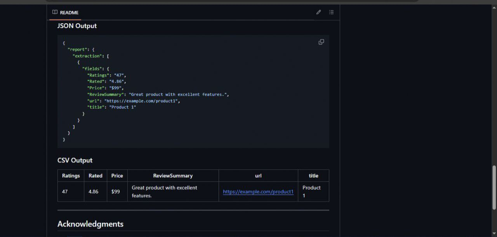
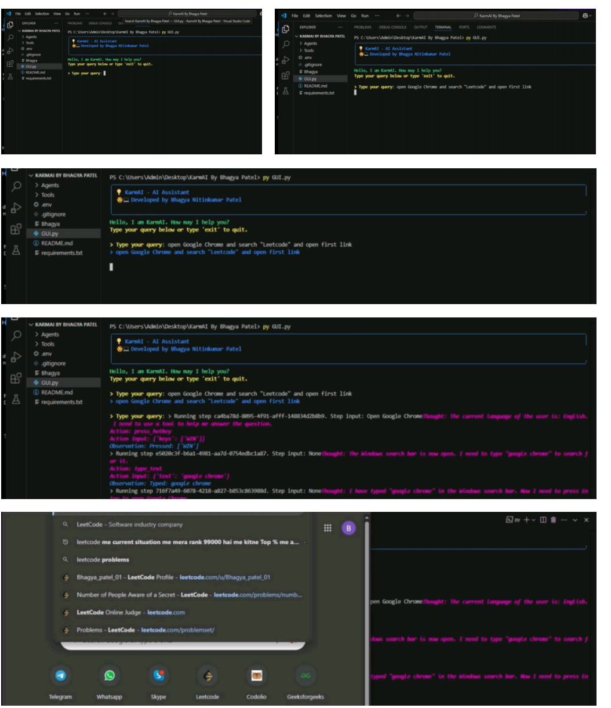

Automated invoice generation from raw customer descriptions using AI pipelines.
Extracted customer details, applied tax logic, and exported dynamic PDFs with minimal user input.
Generated downloadable, professional-grade invoices with minimal manual effort, enhancing operational efficiency.

Collaborated on an AI-based compliance system to automate certification mapping for custom-built products, achieving over 85% accuracy in predictions.
Developed and trained machine learning models using TensorFlow, with real-time prediction capability under 5 seconds for product certifications like ISO 9001, CE, ROHS, and ISI.
Built a data pipeline using Pandas, NumPy, and Streamlit to process specifications and deliver intelligent compliance insights through an interactive web interface.
Ensured model reliability through rigorous testing, achieving 95% data completeness and ≥85% user satisfaction during pilot evaluations.

AI-Powered Global News Filtering Dashboard allows users to filter news based on date range, 4+ categories (Positive, Negative, Business, Technology), 5+ countries (India, USA, UK, Germany, etc.), and a valid Gemini API Key, displaying relevant news.
Built an AI-Powered Global News Filtering Dashboard that filters news by category, date, and country. Displays articles in an intuitive interface with detailed insights.

This repository contains a Python-based solution for automating web scraping, data extraction, and reporting The script extracts structured data from websites, validates it using AI, and generates reports in JSON and CSV formats.

KarmAI is a multi AI agent system designed to control a computer based on user queries. The system uses a hierarchical agent structure to break down complex tasks into simpler actions handled by specialized agents.
KarmAI leverages a master-subordinate architecture to efficiently manage and execute computer control tasks. With its dual-method screen analysis and dedicated agents for keyboard and mouse control, the system is designed for accuracy and ease of use.